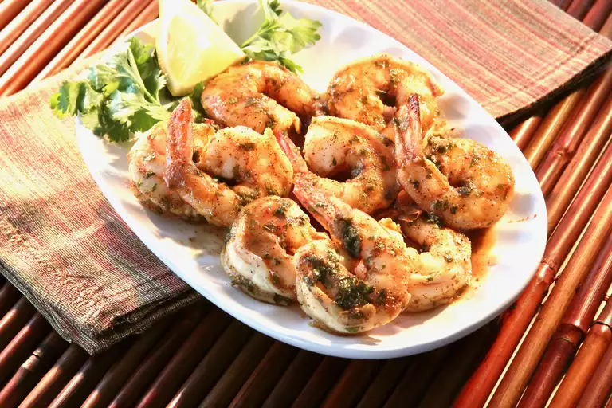

home
Spicy Baked Shrimp

1.20.20 I cooked the shrimp for 10 minutes, and they were overcooked. Temperature at 450ºF definitely is high heat, so next time, I’ll start checking at 7 minutes. It definitely does have a little kick to it, so keep that in mind when making the marinade. We liked it, and I’d make again.
Ingrediants
- ½ cup olive oil
- 2 tablespoons Cajun seasoning
- 2 tablespoons lemon juice
- 2 tablespoons chopped fresh parsley
- 1 tablespoon honey
- 1 tablespoon soy sauce
- 1 pinch cayenne pepper
- 1 pound uncooked shrimp, peeled and deveined
- cooking spray
How to make
- Whisk olive oil, Cajun seasoning, lemon juice, parsley, honey, soy sauce, and cayenne pepper together in a large glass or ceramic bowl. Add shrimp and toss to evenly coat. Cover the bowl with plastic wrap and marinate in the refrigerator for 1 hour.
- Preheat the oven to 450 degrees F (230 degrees C). Spray a baking dish with cooking spray.
- Transfer shrimp into the prepared baking dish and pour any remaining mainade over top
- Bake in the preheated oven until shrimp are bright pink on the outside and the meat is opaque, about 10 minutes.